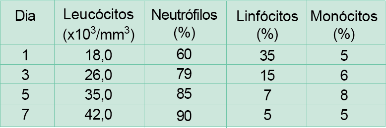

A tabela abaixo mostra os resultados da avaliação leucocitária,
durante os primeiros sete dias de internação, em UTI, de um
paciente após uma grande cirurgia abdominal.

Após a avaliação dos resultados e da periodicidade dos
exames realizados, qual deve ser a recomendação do
Farmacêutico responsável pelo laboratório, como participante
da equipe multiprofissional de atenção ao paciente?
-
Não há necessidade de mudar a periodicidade dos
exames, pois os resultados indicam uma diminuição do
processo inflamatório.
-
Não é necessária a realização de outros exames, pois a
diminuição gradativa do percentual de linfócitos indica a
presença de uma infecção de origem viral.
-
Não é necessária a realização de outros exames, pois o
aumento do número de leucócitos corresponde a uma
reação de recuperação na qual os neutrófilos estariam
envolvidos no processo de cicatrização.
-
Seria recomendável o exame diário devido ao aumento do
número de leucócitos associado ao aumento do percentual
de neutrófilos, o que indica uma infecção de origem
bacteriana em evolução.
-
Devem ser feitos outros exames, pois os valores apresentados
não são suficientes para qualquer conclusão
acerca da evolução do paciente.